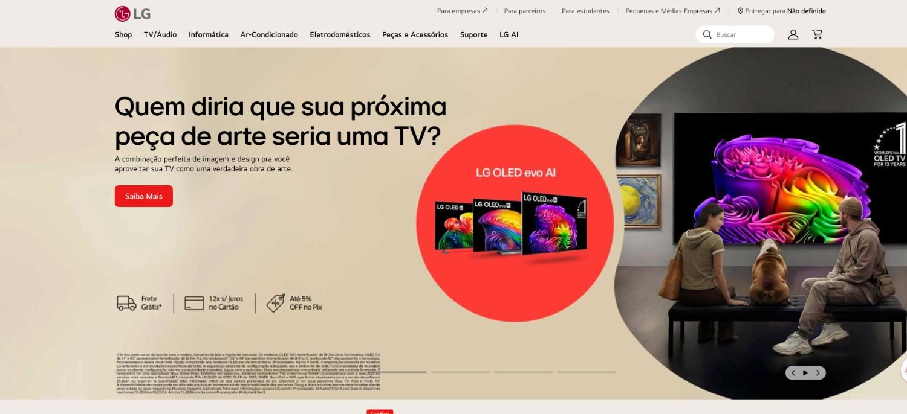

Halving LG's global translation spend, from USD 1.2M to USD 600K a year
How I moved LG's website translation to AI-based vendors, first by proving the technology myself and then by changing who LG buys translation from.

Annual website translation spend, all LG websites
About 60% lower per-word cost; both vendors now translate with AI.
- Role
- Translation Vendor Account Manager
- Scope
- All LG websites, ~70 countries
- Budget
- USD 1.2M → 600K / year
- Vendors
- 1 → 2
 LG Electronics makes home appliances, TVs and IT products sold worldwide, with KRW 89 trillion (about USD 60B+) in 2025 revenue. Concentrix, a global customer-experience company with about 455,000 employees, runs LG’s global website management project; LG is one of its largest B2B clients.
LG Electronics makes home appliances, TVs and IT products sold worldwide, with KRW 89 trillion (about USD 60B+) in 2025 revenue. Concentrix, a global customer-experience company with about 455,000 employees, runs LG’s global website management project; LG is one of its largest B2B clients.
The situation and the challenge
Product detail pages on every LG website are translated by outside vendors and paid per word. LG wanted AI translation, but human translation earns a vendor more, so our single vendor had no reason to change (even after requests for AI translation).
Who was involved
What I did
- Mid-2025Researched AI translation on my own and proposed it to LG
- Jan 2026POC validated on the UK and Spain development sites
- Feb 2026Took over the translation vendor account
- Mar 2026Brought in a second, AI-based vendor
- NowCrawl-report feedback loop tunes each language
- Proved it first. LG had raised AI translation as an idea but nobody at LG owned it. So in mid-2025 I researched solutions on my own, picked one, checked its implementation, pricing and quality through structured Q&A with the vendor, then proposed it to LG with an execution plan.
- Ran the proof of concept. Coordinated the vendor, LG's platform team and the CDN provider to put the solution on LG's UK and Spain unpublished websites: snippet insertion, language routing, and a duplicate-site test setup. Technical validation was completed in January 2026.
- Took over the translation vendor account in February 2026, including managing the annual budget, monthly cost closing, and securing full approval from LG.
- Restructured the vendor pool in March 2026, I brought in a second vendor that already translated with AI.
- Added a feedback loop. The vendors now run crawl reports showing how each subsidiary actually uses the delivered copy on its site. We use them to tune the translation database to each language's and subsidiary's preferences.
Key decisions
- Add a second vendor instead of pushing the incumbent harder.The incumbent's margin depended on human translation, so persuasion had already failed. A competitor that translated with AI gave the incumbent a business reason to change. It adopted AI translation soon after.
- Run the POC on development sites in two countries.It let LG see a working result on its own platform with no risk to live sites, and two languages were enough to test routing and search before asking for a wider rollout.
- Track how subsidiaries use the copy, not only what we deliver.Cost per word says nothing about whether a translation is used. The crawl reports show which wording local teams keep or rewrite, so quality improves where it matters to them.
Results
- Global website translation cost halved for all LG websites worldwide.
- Both vendors now deliver AI translation, which LG had wanted but could not get from a single supplier.
- The account management role came to me partly because of the POC work.
What I took from it
Asking a supplier to change against its own interest rarely works. Changing the structure around it does. I now look first for the incentive behind a stuck process before I look for a better argument.